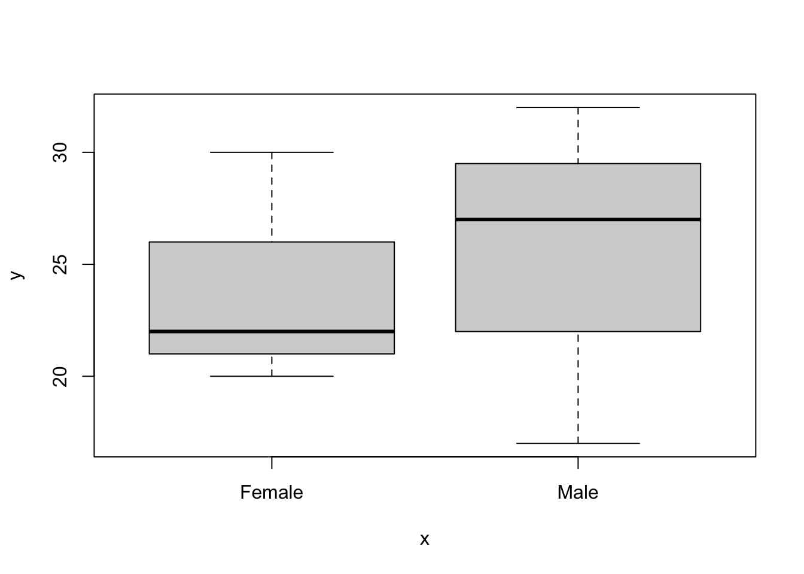

Chapter 5 Manipulating objects
Objects can be manipulated (just like in real life). In R, we use functions to manipulate objects.
For example, we can use the basic arithmetic functions (*, +, /,-) on a vector:
B## [1] 1 3 6 1 7 9B * 3## [1] 3 9 18 3 21 27B - 2## [1] -1 1 4 -1 5 7You can concatenate entire vectors together using the c function. E.g. concatenating the vectors A and B from above:
c(A, B)## [1] 1 2 3 4 5 1 3 6 1 7 9Other manipulations are also done “element-by-element”. For example, here we multiply the first element of B by 1, the second by 2, the 3rd by 3 and so on…:
B * c(1, 2, 3, 4, 5, 6)## [1] 1 6 18 4 35 54If the length of the vectors match, we can also multiply (or add/subtract/divide etc.) multiple vectors:
A / B## [1] 1.0000000 0.6666667 0.5000000 4.0000000 0.7142857 0.11111115.1 Missing values, infinity and “non-numbers”
By convention, missing values in R are coded by the value “NA”. The way that particular functions handle missing values varies: sometimes the NA values are stripped out of the data, other times the function may fail.
For example, if we asked for the mean value of a vector of numbers with an NA value, it will fail:
mean(c(1, 3, 6, 1, 7, 9, NA))## [1] NAIn this case you need to specify that any NA values should be removed before calculating the mean:
mean(c(1, 3, 6, 1, 7, 9, NA), na.rm = TRUE)## [1] 4.5Calculations can sometimes lead to answers that are plus, or minus, infinity. These values are represented in R by Inf or -Inf:
5 / 0## [1] Inf-4 / 0## [1] -InfOther calculations lead to answers that are not numbers, and these are represented by NaN in R:
0 / 0## [1] NaNInf - Inf## [1] NaN5.2 Basic information about objects
You can obtain information about most objects using the summary function:
summary(B)## Min. 1st Qu. Median Mean 3rd Qu. Max.
## 1.00 1.50 4.50 4.50 6.75 9.00The functions max, min, range, and length are also useful:
max(B)## [1] 9min(B)## [1] 1range(B)## [1] 1 9length(B)## [1] 65.3 Data frames
Data frames are the usual way of storing data in R. It is more-or-less the same as a worksheet in Excel. A data frame is usually made up of a number of vectors (of the same length) bound together in a single object. You can make a data frame by binding together vectors, or you can import them from outside R.
This example shows the creation of a data frame in R, from 3 vectors:
height <- c(173, 145, 187, 155, 179, 133)
sex <- c("Male", "Female", "Male", "Female", "Male", "Female")
age <- c(17, 22, 32, 20, 27, 30)
mydata <- data.frame(height = height, age = age, sex = sex)
mydata## height age sex
## 1 173 17 Male
## 2 145 22 Female
## 3 187 32 Male
## 4 155 20 Female
## 5 179 27 Male
## 6 133 30 FemaleData frames can be summarised using the summary function (or the str function, which gives you a different view of the same data):
summary(mydata)## height age sex
## Min. :133.0 Min. :17.00 Length:6
## 1st Qu.:147.5 1st Qu.:20.50 Class :character
## Median :164.0 Median :24.50 Mode :character
## Mean :162.0 Mean :24.67
## 3rd Qu.:177.5 3rd Qu.:29.25
## Max. :187.0 Max. :32.00str(mydata)## 'data.frame': 6 obs. of 3 variables:
## $ height: num 173 145 187 155 179 133
## $ age : num 17 22 32 20 27 30
## $ sex : chr "Male" "Female" "Male" "Female" ...Data frames can be subsetted using the square brackets [], or subset functions. With the square brackets, the first number specifies the row number, while the second number specifies the column number:
mydata[1, ]## height age sex
## 1 173 17 Malemydata[, 2]## [1] 17 22 32 20 27 30mydata[1, 2]## [1] 17subset(mydata, sex == "Female")## height age sex
## 2 145 22 Female
## 4 155 20 Female
## 6 133 30 Female5.4 Classes in R
Every objects you create, or import into R, has a “type” called a class. You can ask what class an object has using the class function.
For example, the vectors you created above have types.
class(height)## [1] "numeric"class(sex)## [1] "character"class(mydata)## [1] "data.frame"You can find out the class of all columns in a data.frame by asking for a summary with str. For example, in this example, there are two numeric columns (num) and a character column (chr).
str(mydata)## 'data.frame': 6 obs. of 3 variables:
## $ height: num 173 145 187 155 179 133
## $ age : num 17 22 32 20 27 30
## $ sex : chr "Male" "Female" "Male" "Female" ...There’s another special class of vector called factor. In the small dataset above (mydata), sex is registered by R to be a character vector. For some functionality this is perfectly fine, but for others you will need to convert the data into a factor.
For example, this code, to make a box plot, will not work:
plot(mydata$sex, mydata$age)But this code will work fine:
plot(as.factor(mydata$sex), mydata$age)
Of course it might be easier to convert it to be a factor in the data frame itself, like this:
mydata$sex <- as.factor(mydata$sex)
str(mydata) # You can see that it is now registered as a factor## 'data.frame': 6 obs. of 3 variables:
## $ height: num 173 145 187 155 179 133
## $ age : num 17 22 32 20 27 30
## $ sex : Factor w/ 2 levels "Female","Male": 2 1 2 1 2 1plot(mydata$sex, mydata$age)
If you are getting strange results from your code it is a good idea to check the structure of the data. Are the classes what they should be?
5.5 Organising your work
It would be incredibly tedious to enter real data into R by typing it in!
Thankfully, R can import data from a several data formats, and it understands the file structure of your computer. Thus, you can use spreadsheet software (like Excel) to enter and store your data, and you can organise your project work in a sensible way in folders (sometimes called directories) on your computer.
The most commonly used data format is comma separated value (CSV) so I will use that. You can also import from Excel, but the data must be formatted in a particular way to enable this (I’ll cover this in a later class).
For this course, I suggest that you make a folder somewhere on your computer called “IntroToR”. We will use this as the working directory for the remainder of the session. In RStudio you can set the working directory by clicking through the menu items Session → Set Working Directory → Choose Directory.
You can also using the setwd function to do this, if you know where your files are stored (the file path). File paths in Windows and Mac computers are expressed differently. Apple systems use the forward-slash (/) to separate folders whereas Windows can use the forward-slash (/) or double-backslash (\). In windows you also need to define the drive (e.g. C:).
So, to set the working directory in Apple OSX you would use something like this (obviously, you need to put your path!):
setwd("/Users/orj/Desktop/IntroToR")While in Windows the equivalent command would be something like this (both of the following should work):
setwd("C:\\Users\\orj\\Desktop\\IntroToR")
setwd("C:/Users/orj/Desktop/IntroToR")Typing the path in can be annoying but there are ways to speed it up. In Windows you can copy paths from the Windows Explorer location/address bar, or you can hold down the Shift key as you right-click the file, and then choose Copy As Path.
On a Mac you can copy file paths from Finder: Select your file/folder, Right click, Press the option key (on my keyboard this is the alt key) and click “Copy X as Pathname”
I can check what the current working directory is using the getwd function:
getwd()It is good practice to keep your files well-organised. I recommend that you create a folder in your working directory called CourseData (or similar). Store your data files in this folder.
I have put all the data for the course into a Dropbox folder - see the link in Chapter 1. In there you will find a file called “carnivora.csv”. Download this to your new CourseData folder.
You can now import this file into R using the read.csv function. The specification of the argument header = TRUE signifies that the first row of our CSV file contains the column names. Note that your file path will be different to mine3:
carni <- read.csv("CourseData/carnivora.csv",
header = TRUE,
stringsAsFactors = TRUE
)The stringsAsFactors argument tells R to treat text-type data (technically known as “character strings”) as a special kind of data called factors. Essentially, factors are categorical data where the data can take a limited number of discrete values. For example, “treatmentA”, “treatmentB”, “treatmentC”. Although this may seem a little esoteric right now, it is important to ensure that your data is recognised by R in the correct way. In most cases, your text-type data will be factor data, so it is usually safe to set stringsAsFactors = TRUE.
Tip: RStudio also has a point-and-click “Wizard” to help import data. Look for “Import Dataset” in the top-right pane.
5.6 Inspecting the data
We can get some basic information on your imported data (e.g. the carni data frame) using the summary function, but also the dim and nrow/ncol functions:
summary(carni)dim(carni)## [1] 112 17nrow(carni)## [1] 112ncol(carni)## [1] 17We can find the names of the columns of a data frame with the names function:
names(carni)## [1] "Order" "SuperFamily" "Family" "Genus" "Species" "FW" "SW" "FB" "SB" "LS" "GL"
## [12] "BW" "WA" "AI" "LY" "AM" "IB"The first few columns are to do with the taxonomic placement of the species (Order, SuperFamily, Family, Genus and Species). There then follow several columns of life history variables: FW = Female body weight (kg), SW = Average body weight of adult male and adult female (kg), FB = Female brain weight (g), SB = Average brain weight of adult male and adult female (g), LS = Litter size, GL = Gestation length (days), BW = Birth weight (g), WA = Weaning age (days), AI = Age of independence (days), LY = Longevity (months), AM = Age of sexual maturity (days), IB = Inter-birth interval (months).
You can refer to the sub-parts of a data.frame (the columns) using the $ syntax:
summary(carni$FW)## Min. 1st Qu. Median Mean 3rd Qu. Max.
## 0.050 1.245 3.400 18.099 10.363 320.0005.7 “Classes” in R
I have already mentioned the different object types in R (e.g. vectors and data frames). The object types are technically known as “classes”. You can find out what “class” an object is by using the class function:
class(carni)## [1] "data.frame"In this case, the data frame is, unsurprisingly, of class “data.frame”. However, the vectors that compose the data frame also have classes. There are several classes of vectors including “integer” (whole numbers), “numeric” (real numbers), “factor” (categorical variables) and “logical” (true/false values).
I expect you have heard of the first two data types, but “factor” might be puzzling. Factors are defined as variables which can take on a limited number of different values. They are often referred to as categorical variables. For example, in the carnivore dataset, the taxonomic variables are factors. The different values that a factor can take are known as levels and you can check on the levels of a vector with the levels function.
class(carni$Family)## [1] "factor"levels(carni$Family)## [1] "Ailuridae" "Canidae" "Felidae" "Hyaenidae" "Mustelidae" "Procyonidae" "Ursidae" "Viverridae"5.8 Tables and summary statistics
For vectors of class “factor” you can use the table function to give the counts for each level:
table(carni$Family)##
## Ailuridae Canidae Felidae Hyaenidae Mustelidae Procyonidae Ursidae Viverridae
## 1 18 19 4 30 4 4 32You can use the function tapply (“table apply”), to get more complex summary information. For example, I could ask what the mean female weight (FW) is in each of the families using the argument mean:
tapply(carni$FW, carni$Family, mean)## Ailuridae Canidae Felidae Hyaenidae Mustelidae Procyonidae Ursidae Viverridae
## 120.000000 9.050000 31.432105 33.540000 3.989000 3.642500 198.250000 2.6728135.9 Plotting data
Basic plots can be made using the plot command. For example, let’s have a look at the relationship between log gestation length and log female body weight (see Figure 5.1, below):
plot(log(carni$FW), log(carni$GL))
Figure 5.1: A simple scatter plot
5.10 R Packages
R packages are collections of software that add capabilities to “base R”. In this course we use several packages including dplyr, which adds functionality for manipulating data, ggplot2 which helps us make pretty plots and magrittr which adds tools to allow more “elegant” programming. Packages need to be installed using install.packages command before they can be used. You only need to install them once.
install.packages("dplyr")
install.packages("ggplot2")
install.packages("magrittr")To use the packages you need to load them with the library command, like this:
library(dplyr)
library(ggplot2)
library(magrittr)We will be using these packages a lot, and you will need to remember to load them every session. It is therefore useful to add those library commands to the top of every script you write.
5.11 Exercise: Californian bird diversity
In the 1950s-1970s there was rapid growth in the number of houses being built in California, with suburbs sprawling out into the new sites in the countryside. What effect would this have on local bird communities?
Surveys on bird abundances were carried out in several locations near Oakland, California 4. The locations were of different ages, enabling us to investigate what changes might happen through time. Although there were no surveys before the developments, we can regard the bird abundance in the very youngest housing developments as the baseline pre-development condition.
Think about what you might expect to happen to bird species diversity through time in a newly developing suburb.
5.11.1 The data
The relevant data file is called suburbanBirds.csv. This file contains data on bird abundances surveyed in 1975. The columns of the data are Name (name of the suburb), Year (the year that the suburb was built), HabitatIndex (an index of habitat quality, related to tree height, garden maturity etc.), nIndividuals (number of individual birds seen in a standard survey) and nSpecies (number of species seen in a standard survey).
Additional surveys found an average species richness of 3.5 in nearby undisturbed habitats of grassland savanna.
5.11.2 Try the following
First import the data. Check that the columns look as they should (use
summaryorstrfunctions).What is the mean, minimum, and maximum number of species seen? (there is more than one way to do this)
How old are the youngest and oldest suburbs? (hint: the survey was carried out in 1975, do the maths!)
Plot the relationship between
YearandnSpeciesas a scatter plot using base-R graphics (using theplotfunction).The pattern might be easier to see if you could replace
YearBuiltwith suburb age. Create a new vector in your data frame for this variable (e.g.df$Age <- 1975 - Year)). Re-plot your results.What do the data show? What might be the mechanisms for the patterns you see? Do they match your expectations?
Export your plots and paste them into a Word Document.
If you get this far, try plotting the other variables in the dataset.
A note here about code formatting: You can see that I have written the code over several lines. This is not strictly necessary, but (I think) it can make long commands easier to read. R doesn’t “see” the new lines. The plot command could be in a single long line.↩︎
Vale, T. R., & Vale, G. R. (1976). Suburban bird populations in west-central California. Journal of Biogeography, 157–165.↩︎